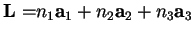
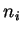

The point group symmetry of the system is determined automatically and can be checked (option Sy in various menus). Normally, translations are also taken into account when checking equivalence of atoms, i.e. two point in space are thought to be equivalent if they are separated by a lattice translation

with
being integers. There are some exceptions though corresponding to molecular properties, specifically options Cl (Section 2.6.4) and Vm (Section 2.6.8.5) of the main menu, when translations are ignored. The symmetry is used in many parts of the code.At the moment, all symmetry operations are fixed to the axes of the Cartesian coordinate system. The complete list of the symmetry operations is shown in Figs. 2.1 and 2.2.